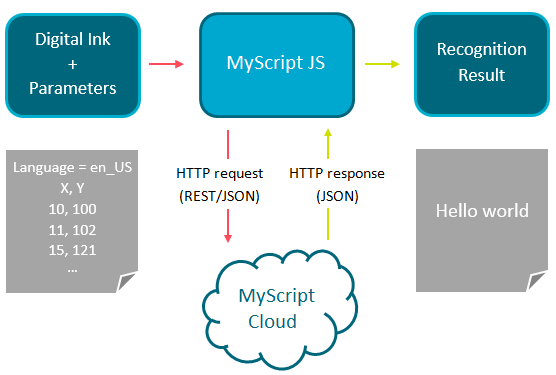

MyScript JS is a free set of libraries based on MyScript Cloud and used to provide an easy and quick implementation of online handwriting recognition. Its role is to simplify access to MyScript Cloud, where a *.json request has to be manually created from A to Z, whereas MyScript JS only needs a valid application key and ink coordinates. The MyScript JS package is available for free on GitHub and includes API reference and a Getting Started Guide.
For more details on MyScript Cloud, see the corresponding documentation.

To make requests using MyScript JS, you need:
You need to pass certain parameters so you can be properly invoiced for your use of the MyScript Cloud and JS services. This is described on the Registration page.
MyScript JS can recognize handwritten text, shapes, mathematical expressions and music. See below some examples:

The scratch-out gesture is supported as well, meaning that the user can erase an item by scratching it out.
To see a working example of MyScript JS, visit our WebDemo site and try out our handwriting recognition in a variety of situations.
| Application key | Key provided on registration that identifies you as a bona fide user. |
| Candidate | Refers to a recognition candidate: The recognizer keeps in memory all the alternatives it has considered during the recognition process (e.g. "cat", "cal", "eat"). These alternatives are called candidates. More information... |
| Digital ink | Hand-drawn strokes that are captured digitally via a touch screen, stylus device or other digital writing implement. The strokes are an array of points, their XY coordinates. This is the only input accepted by MyScript. More information... |
| Recognition | Process of turning digital ink into machine readable elements such as digital text or vector shapes. |
| Recognizer | MyScript recognition engine that is capable of recognizing text or shapes or equations or music. |
| Resource | Internal information used within the MyScript recognizer. This could be a dictionary or lexicon, a language resource that helps it convert a certain language, etc. |
| Result | This is the result of the MyScript engine's recognition process. The end result is the final choice for the whole ink sample. For text, however, you can obtain more of the hierarchical tree that constitutes the result by asking to see x candidates at various levels. More information... |